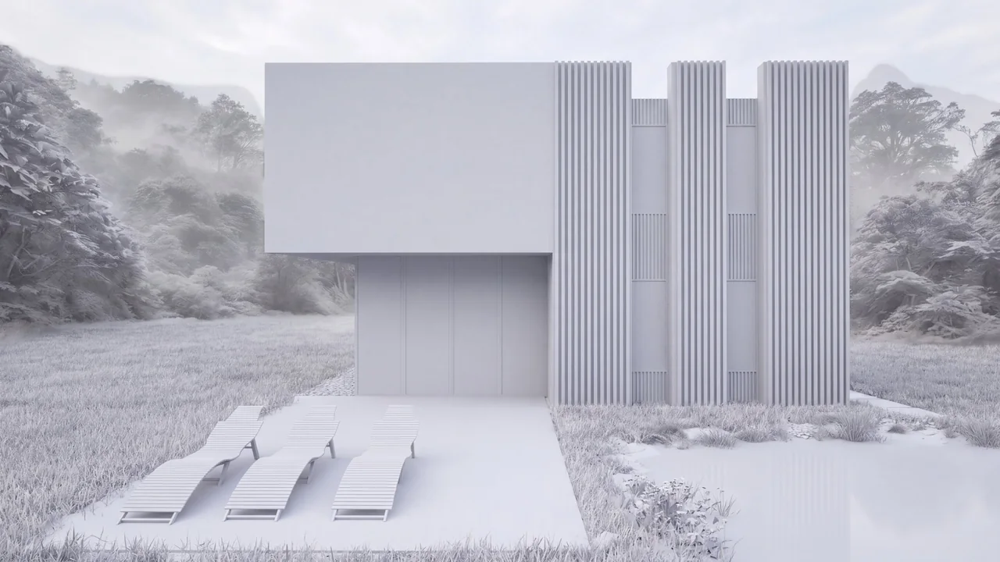

Wszystkie projekty
Dom
Wizualizacja zewnętrzna minimalistycznego domu obłożonego ciemnym drewnem, stojącego na łące przy naturalnym stawie.
- Mój zakres
- Koncepcja i wizualizacja: modelowanie, materiały, krajobraz, oświetlenie, rendering, filmowy ruch kamery.
- Rok
- 2024–2025


Biały renderFinałOd białego renderu do finału
Biały render pozwala sprawdzić bryłę, drewniane lamele i światło. Finał zachowuje tę samą kamerę, więc nastrój tworzą materiały, mgła i odbicie w stawie.
Przeciągnij suwak lub użyj strzałek, aby porównać.
- Styl
- Minimalistyczny nowoczesny dom z pionowymi drewnianymi lamelami.
- Materiały
- Elewacja z ciemnego drewna, czarne przeszklenia, drewniany taras, naturalny staw, łąka.
- Oświetlenie
- Niskie poranne słońce, mgła między drzewami, miękkie światło nieba.
- Programy
- 3ds Max: modelowanie i scena. Corona Renderer: materiały, światło, render. Photoshop: postprodukcja.
Animacja kamery
Powolny filmowy ruch kamery stworzony na podstawie wizualizacji.